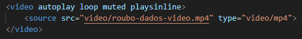
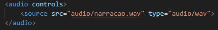

<video>
A tag video é utilizada para incorporar vídeos diretamente em uma página HTML. Com ela, é possível reproduzir conteúdos multimídia sem a necessidade de plugins externos.
A tag pode conter uma ou mais tags <source>, permitindo adicionar diferentes formatos de vídeo para maior compatibilidade entre navegadores.
Principais atributos
- controls → Exibe os controles do vídeo;
- autoplay → Inicia o vídeo automaticamente;
- loop → Repete o vídeo continuamente;
- muted → Inicia o vídeo sem som;
- poster → Define uma imagem de capa para o vídeo;
- width e height → Definem largura e altura do vídeo.
Exemplo

<audio>
A tag audio é usada para adicionar sons, músicas ou outros arquivos de áudio em páginas HTML.
Assim como a tag video, ela também pode utilizar múltiplas tags <source> para suportar diferentes formatos de áudio.
Principais atributos
- controls → Exibe os controles do áudio;
- autoplay → Reproduz automaticamente;
- loop → Repete o áudio continuamente;
- muted → Inicia sem som;
- preload → Define como o áudio será carregado.
Exemplo

⭠ Voltar para Segurança Digital